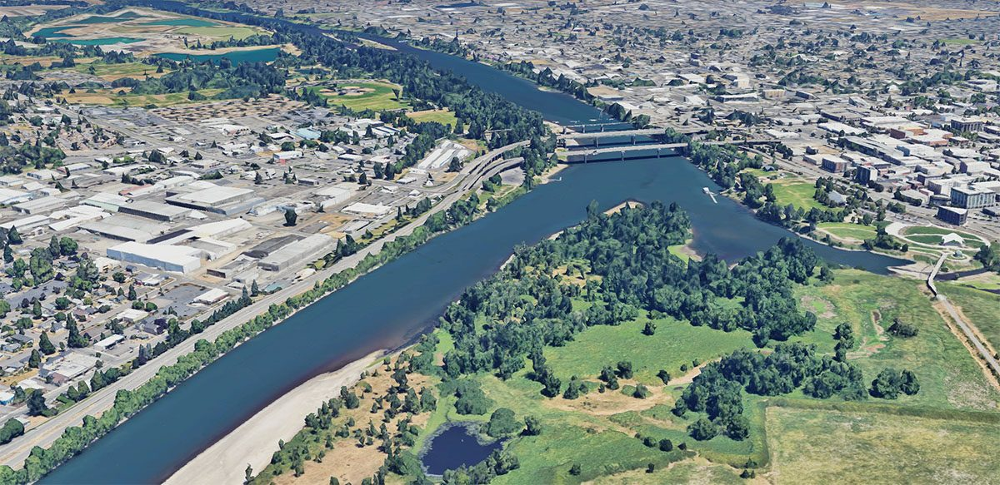
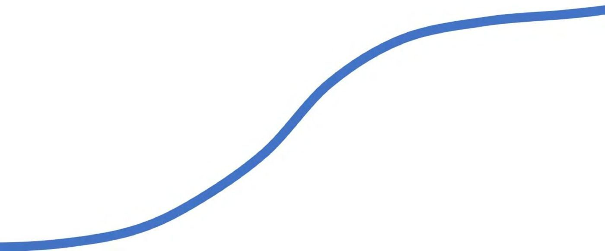
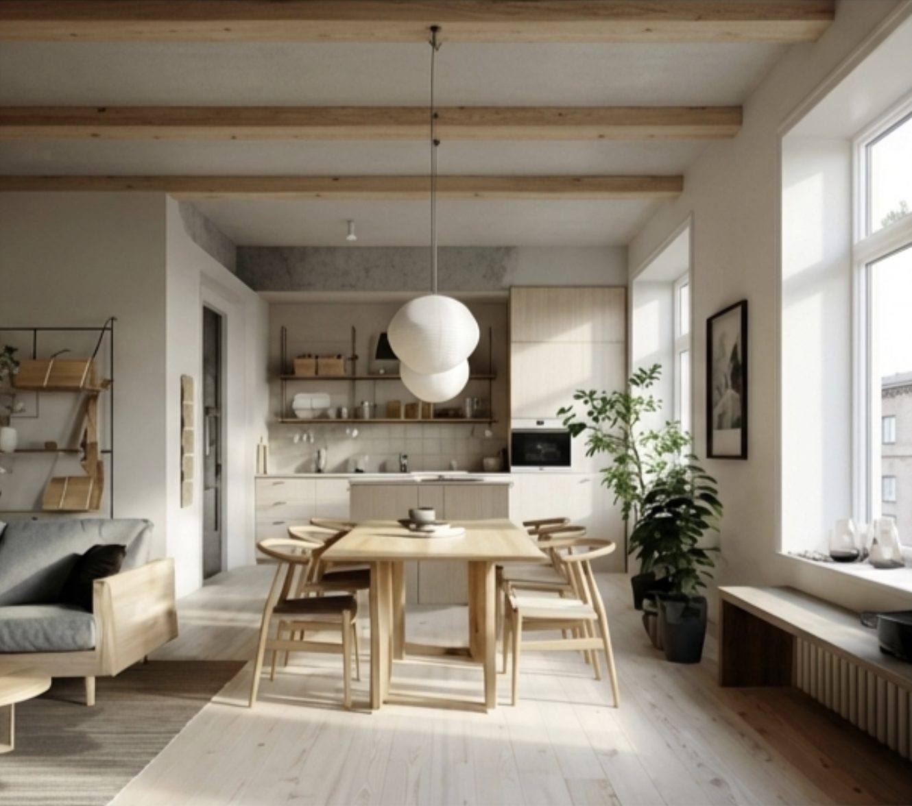
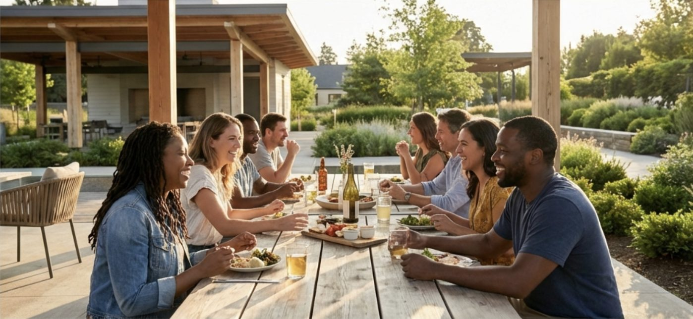

The Place
One connected neighborhood, from the river up





A ~22-acre riverfront neighborhood where housing, work, play, food, wellness, and mobility share the same streets. Slow down. Imagine being here.


Phase One's courtyard blocks are designed around Scandinavian courtyard urbanism and Japanese garden philosophy: family-friendly density wrapped around quiet interior gardens, with retail and daily life at the street edge. Light-filled homes blend natural materials and Nordic simplicity with high-performance building systems — places people can imagine renting, owning, and staying.
Interior gardens with kid-safe green space — calm at the heart of density, supervision built into everyday life.
Experiential retail, cafés, and innovation workspace face the street — daily errands on foot, neighbors by default.
Studios to three-bedroom townhomes; high-performance systems that lower energy bills and support everyday wellness.





A district succeeds when people come for a reason and move without friction. West Salem proposes one landmark that pulls the region in — and one mobility system that knits the city together.
A spiraling timber tower visible from I-5 — and a journey, not just a view. As you climb the continuous ramp, the story of this place unfolds around you: Native American history, the valley's biodiversity, the living systems of the river. You emerge at the top to see the Willamette running north and south with new eyes. A daily ritual for locals; a destination for everyone else.
Swyft Cities' Whoosh is a cable-based network of five-passenger, battery-electric autonomous vehicles — 30 mph, with offline stations so every trip is nonstop and a vehicle is always waiting. It soars over the obstacles that divide Salem: Highway 22, the Willamette, Pringle Creek, the rail line. A concept sketch for Salem maps 16 stations across 4.5 route miles linking West Salem, downtown, Riverfront Park, and Willamette University.
Source: "The Potential for a Whoosh Transit Circulator in Salem, OR" (Now City & partners, 2026) and the City of Irvine Great Park travel demand analysis cited therein.
Now City's mission is to accelerate the transition to regenerative, resilient, and equitable communities and cities.
Restore the natural systems that sustain daily life (clean air, water, soil, and food), improving personal health while rebuilding ecological function at the neighborhood and district scale.
Homes, mobility, energy, food, and social systems are designed to perform under stress (climate and economic disruption), strengthening household security and community-wide stability.
Designing around the realities of caregiving, childhood, aging, mobility independence, and access to opportunity improves daily life for individuals while creating more stable, connected, and inclusive communities for all.
Now City West Salem is designed to quietly become a resilience hub — not through emergency labeling, but through everyday civic life. By anchoring the district in shared gathering, local infrastructure, and walkable access to daily needs, resilience emerges naturally as a byproduct of good urban design.
A living innovation framework to design, test, and scale urban+rural circular food systems. By linking regenerative agriculture, food logistics, local markets, waste recovery, and community participation, the district becomes a real-world platform for proving what truly resilient food economies look like.
At first glance, "Regenerative AI" may sound like an oxymoron. We believe it reflects the work ahead: redirecting powerful digital tools toward the healing and long-term resilience of living systems — incubating a new generation of graduates, founders, and community leaders applying AI directly within the fabric of daily life.
Not just parks or green decoration — treating landscape as living infrastructure: integrated ecology, climate adaptation, social systems, and public health. Designing with nature's logic, not tacking nature onto development.
Communities designed around the daily realities of women, children, and aging adults consistently outperform conventional development on health, safety, stability, and long-term value. A women-first lens creates places that work better for everyone.
The Investment Summary carries the offering, the financials, and the exit windows. The Business Plan shows how it gets built.